Installatie software
Voor dit deel heb je niet veel nodig; download en installeer het volgende:
- Notepad++, te vinden op https://notepad-plus-plus.org/downloads/
- .NET8 SDK (SDK: Software Development Kit), te vinden op https://dotnet.microsoft.com/en-us/download/dotnet/8.0
C#.NET programmeren in Notepad++
C# als programmeertaal
Er zijn veel programmeertalen: Javascript, Python, C#, Ruby... Een programmeertaal legt de regels vast (grammatica, of syntax) volgens dewelke code geschreven wordt. Een vergelijking van C# met bijvoorbeeld Javascript, Ruby en Python:
for (int i = 1; i <= 5; i++)
{
if (i % 2 == 0) Console.WriteLine(i);
}for (let i = 1; i <= 5; i++) {
if (i % 2 == 0) console.log(i);
}
(1..5).each do |i|
puts i if i.even?
end
for i in range(1, 6):
if i % 2 == 0:
print(i)
.NET Framework
Naast een programmeertaal, heb je ook een context nodig, i.e. de omgeving waarbinnen je de taal wil gebruiken. C# is sterk verbonden met het .NET Framework, gebruikt om Windows toepassingen te schrijven. Dit bestaat hoofdzakelijk uit een bundel pakketten met voorgeschreven code, georganiseerd in een boomstructuur of namespaces. Enkele die je regelmatig zal tegenkomen:
| namespace | omschrijving |
|---|---|
System |
basisfuncties: schrijven/lezen in console, random getallen... |
System.Collections.Generic |
lijsten, dictionaries, sets |
System.IO |
bestanden en mappen |
System.Text |
tekstbewerking, StringBuilder |
Om een namespace te gebruiken in je programma, moet je het bovenaan toevoegen:
using System;
using System.Collections.Generic;
...

C# wordt ook in andere omgevingen gebruikt dan .NET; enkele voorbeelden:
- Unity (game programming) gebruikt C# als primaire scripttaal
- .NET nanoFramework en Meadow gebruiken C# op microcontrollers
- Mono laat toe C# te draaien op Linux/Mac zonder Microsoft’s .NET.
Maar in praktijk wordt C# dus hoofdzakelijk gebruikt met het .NET Framework.
Een programma is een opeenvolging van instructies die in een bepaalde volgorde worden uitgevoerd. Het hele proces van code tot uitvoering bestaat uit drie grote stappen: coderen—builden—runnen. Grafisch samengevat:
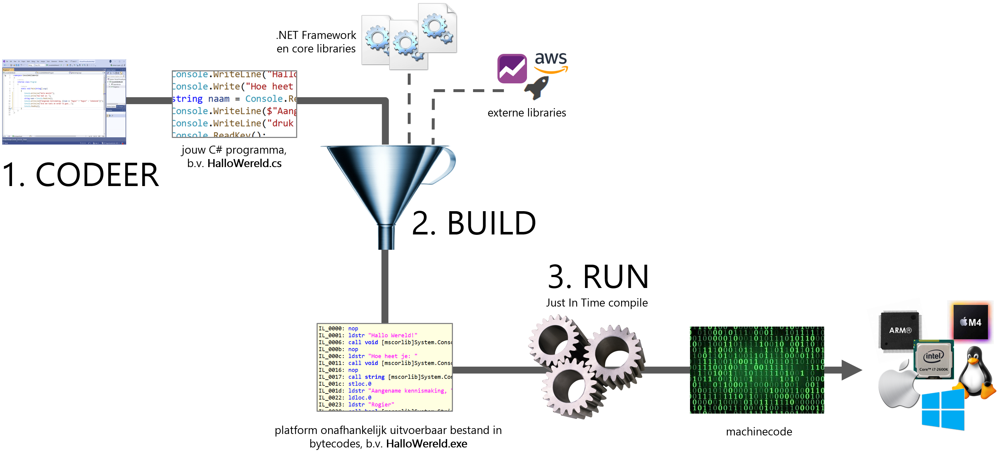
Stap voor stap
bestanden aanmaken
Maak eerst in verkenner een projectmap aan voor je oefening, b.v. ConsoleHalloWereld. Open de folder dan in Notepad++:
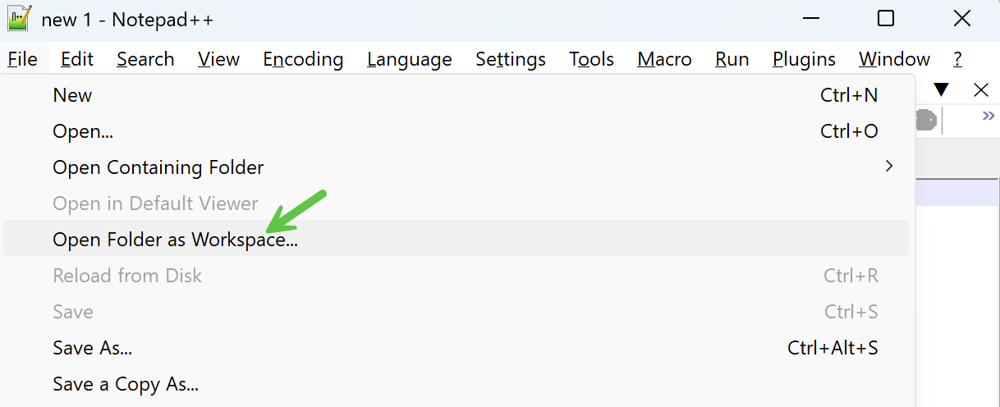Vervolgens maak je twee bestanden aan in die map (in Verkenner of in Notepad++):
- Program.cs: eigenlijke programmacode
- ConsoleHalloWereld.csproj: meta informatie over je programma (.NET versie e.d.)
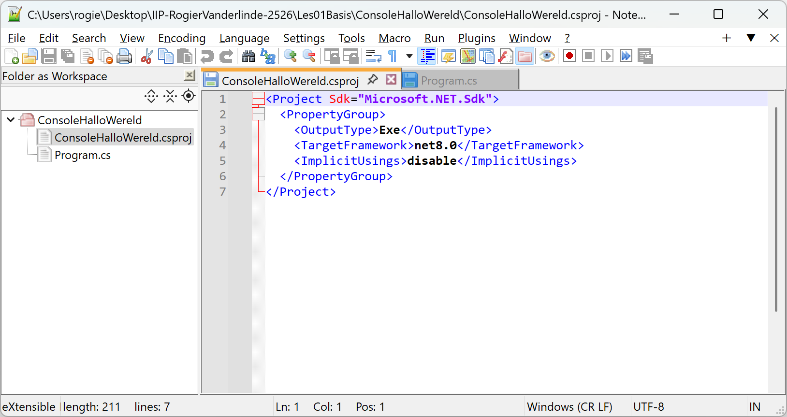
In principe maken de namen van de bestanden en mappen niet uit. Uit conventie houden we ons aan volgende regels:
- projectmap: Console + oefeningnaam, b.v. ConsoleHalloWereld, ConsoleGetalRaden, ConsoleBankautomaat...
- programmabestand: Program.cs
- projectbestand: projectmapnaam + .csproj, b.v. ConsoleHalloWereld.csproj, ConsoleGetalRaden.csproj...
coderen
Dit is het schrijven van het programma zelf. Screenshot van een eenvoudig C# programma in Notepad++:
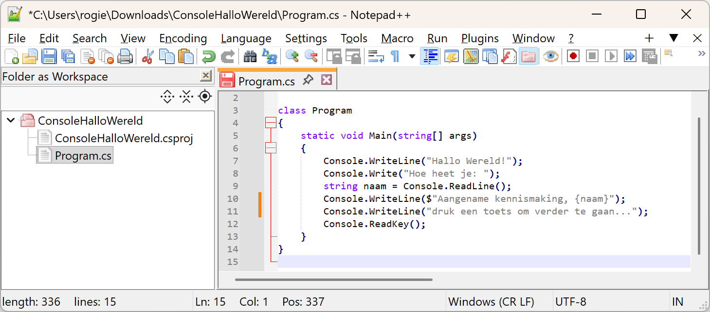builden
Als je klaar bent, ga je naar de volgende stap, het builden. De eenvoudigste manier is de projectmap eerst openen in Terminal:
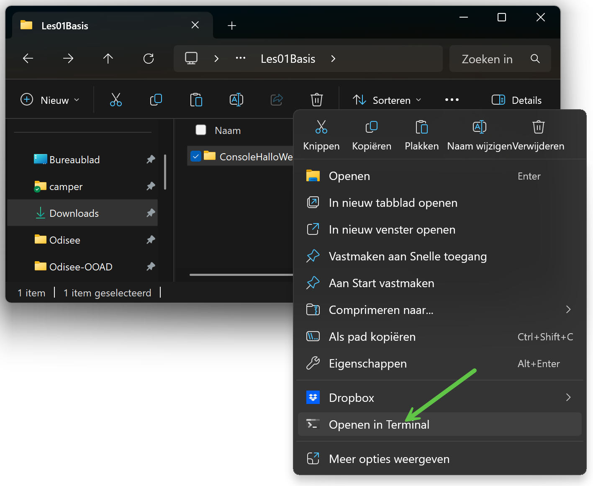
Daarna gebruik je het commando dotnet build:
Als er fouten in je programma staan, krijg je de mededeling dat de build mislukt is en een overzicht van de fouten:
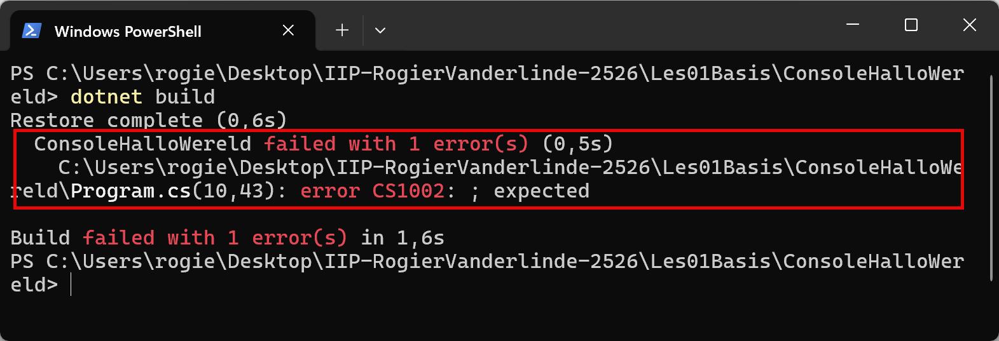De code wordt door het builden in verschillende stappen omgezet naar een .exe bestand met platform-onafhankelijke tussencode, CIL of Common Intermediate Language genoemd, bestaande uit low-level instructies of bytecodes. Voor de geïnteresseerden: je kan de bytecodes zien door de .exe te openen in tools als ILSpy. Enkele aspecten van het build proces:
- linking: combineren van alle bronnen, codefiles, libraries, referenties enz... in één bestand
- compiling: vertaling van hig-level C# code naar low-level bytecodes
Als de build gelukt is, komen er twee mappen bij in je project:
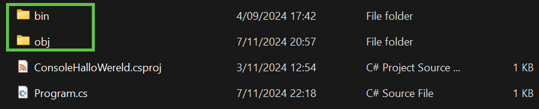- bin: bevat de binaire (uitvoerbare) bestanden
- obj: bevat tijdelijke en intermediarie bestanden
Je mag die bin en obj mappen altijd handmatig verwijderen en opnieuw builden; soms kan je daarmee buildproblemen oplossen.
runnen
De eenvoudigste manier is het .exe bestand in bin/Debug/net8.0 starten door dubbelklikken in Verkenner:
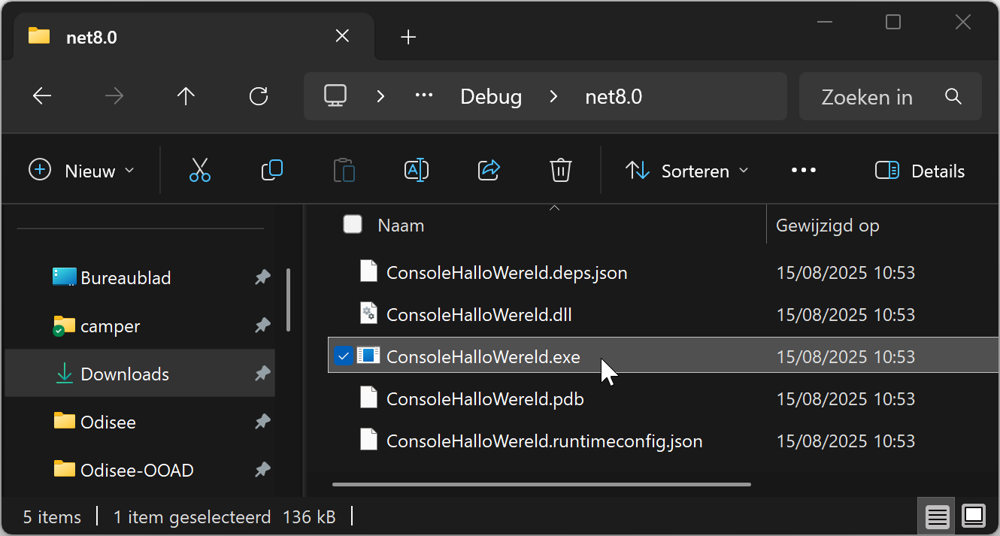De .NET Common Language Runtime (CLR) zal tijdens de uitvoering (JIT: just in time) de bytecode vertalen in platform-specifieke machine-instructies. Het programma in actie:
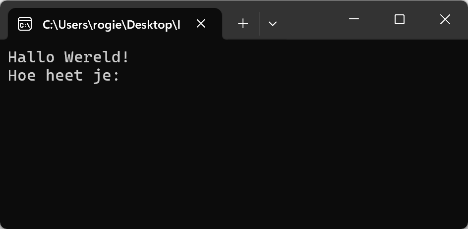Soorten Fouten
In elke fase van het programma kunnen fouten optreden:
- syntax error: je code bevat een fout tegen de vormregels van de programmeertaal, bv. puntkomma of haakje vergeten
- build error: je code is correct geschreven, maar tijdens het builden loopt iets fout, bv. een bibliotheek wordt niet gevonden
- runtime error: je code compileert netjes, maar tijdens het uitvoeren loopt je programma vast, bv. een onverwachte deling door nul, geheugenfout, bestand wordt niet gevonden enz...
- logical error: je programma loopt niet vast, maar doet niet wat je verwacht, bv. de output is verkeerd of een knop werkt niet
Builden/runnen met NPPExec
Om binnen Notepad++ zelf te kunnen builden en runnen, heb je de NPPExec plugin nodig. Het vraagt éénmalig wat configuratie. Hier gaan we.
Plugin toevoegen
Kies Plugins, Plugins admin...:
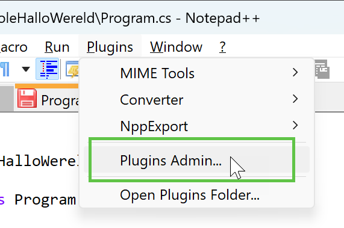Zoek op NppExe en klik install:
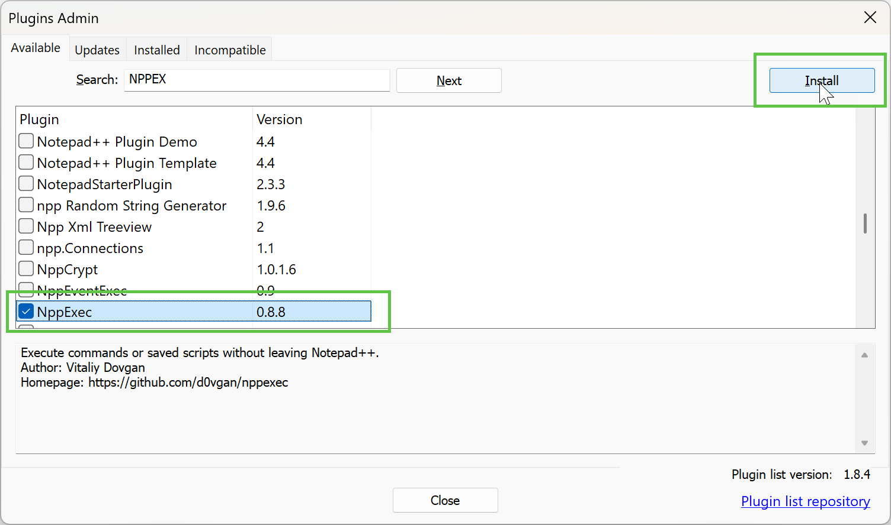Script aanmaken
Kies Plugins, NppExe, Execute NppExe script...:

Voer deze code in, en klik Save...:
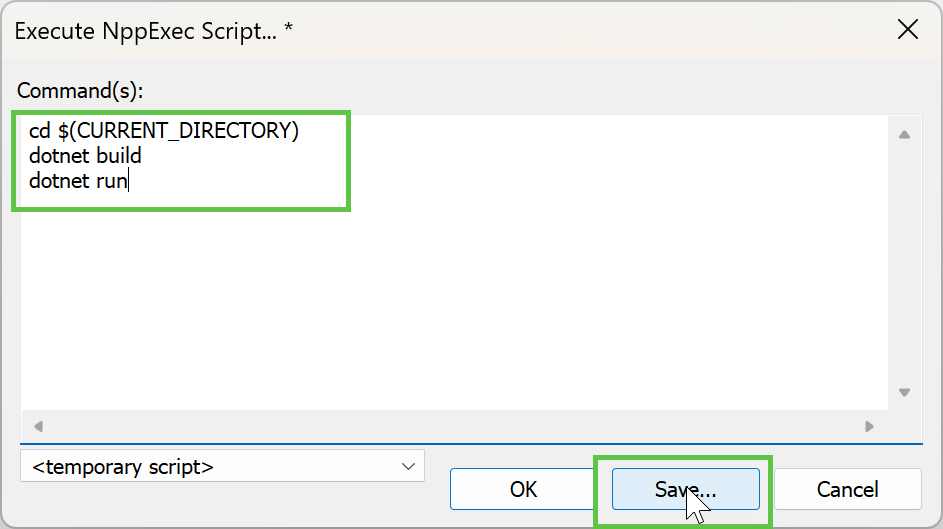Geef een willekeurige beschrijving:
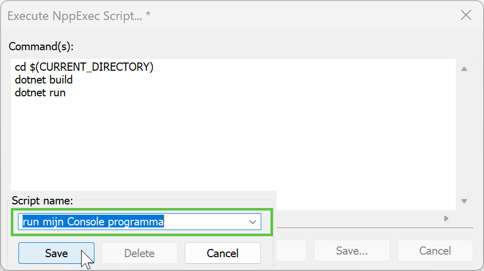Menu item aanmaken
Kies Plugins, NppExe, Advanced options...:
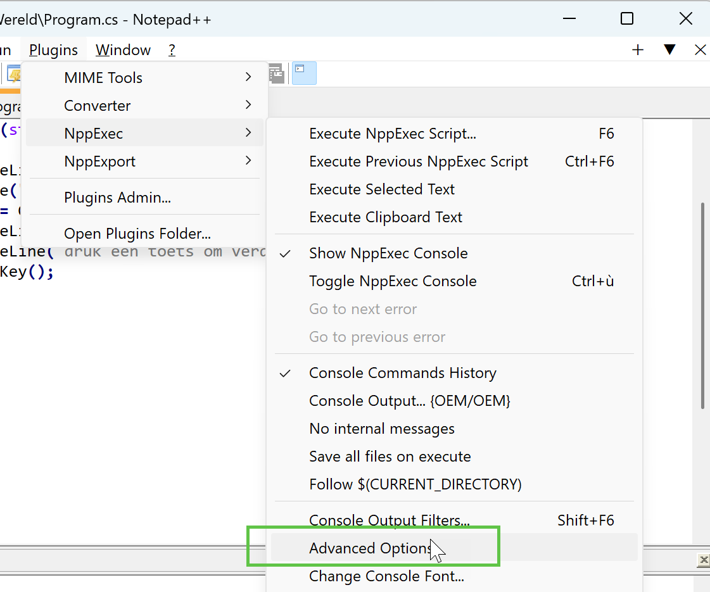Geef je menu item een naam, b.v. Run C#, kies het script en klik Add/Modify:
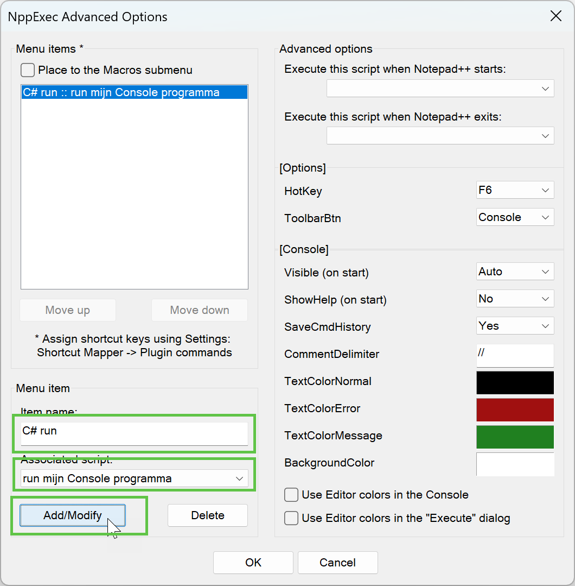Je kan het nu al runnen vanuit het Macro menu:
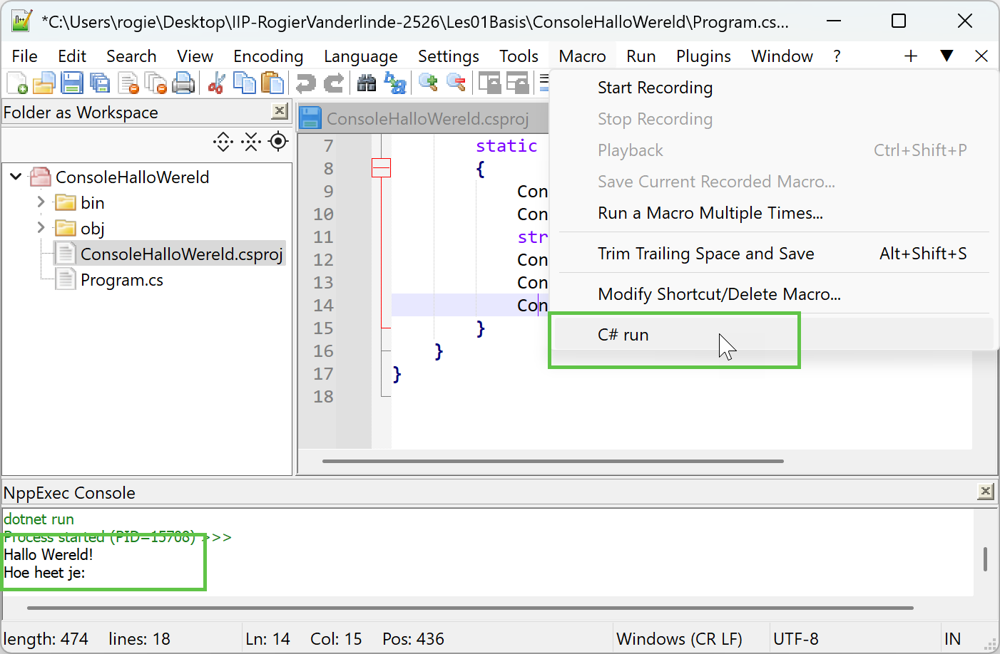Shortcut aanmaken
Kies Settings, shortcut mapper...:
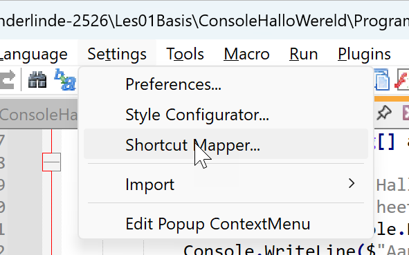Zoek onder Plugin commands je macro, en geef het volgende shortcut:
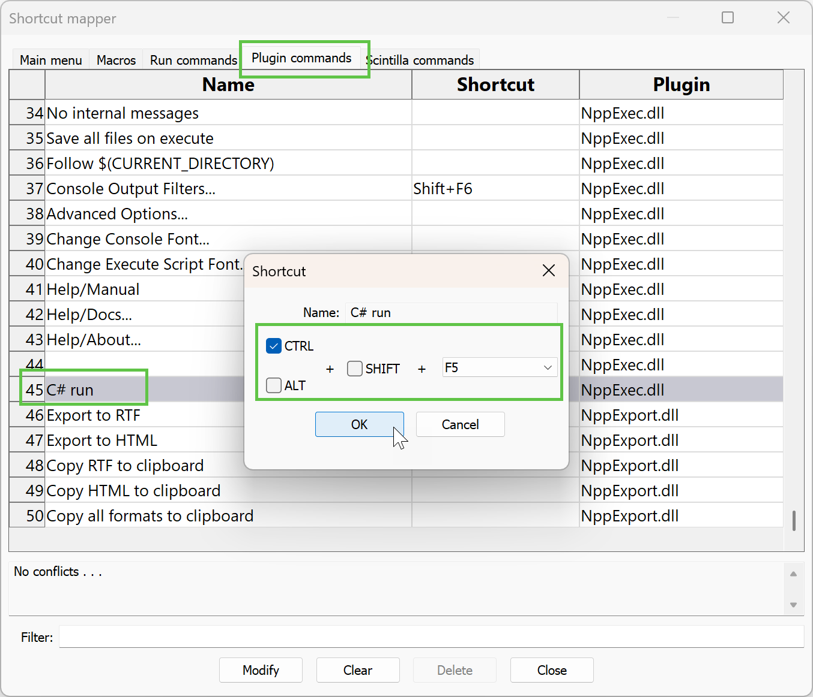Programma stoppen met Ctrl-C
Om de uitvoering van een programma voortijdig te stoppen, druk in de console Ctrl-C:
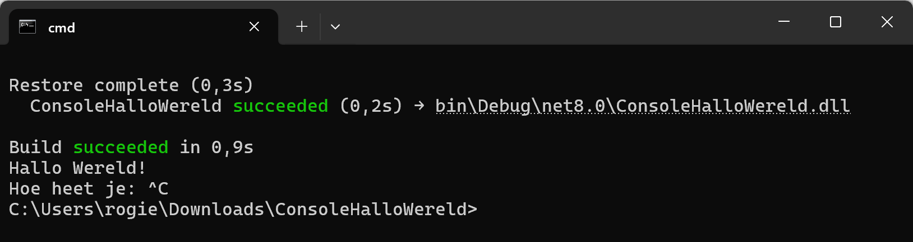Notepad++ weetjes
Lettertype veranderen
Het standaard lettertype voor code is Courier New, wat lastig leesbaar is. In Notepad++ kan je dit aanpassen via Settings, Style Configurator:
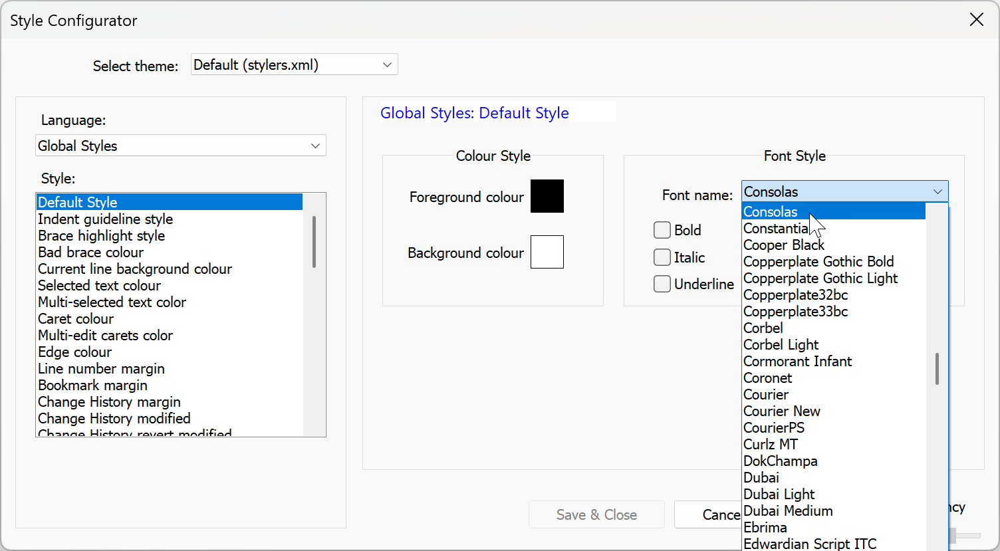Dark mode
Via Settings, Preferences kan je dark mode inschakelen:

Voor het overige raden we aan niet teveel aan de instellingen te prutsen.
Shortcuts
Algemene shortcuts van elke tekst editor:

Nog een paar typische Notepad++ shortcuts die je zou moeten kennen:
| Shortcut | Betekenis |
|---|---|
Ctrl-K, Ctrl-Shift-K |
Comment, Uncomment geselecteerd blok |
Ctrl-H |
zoeken en vervangen |